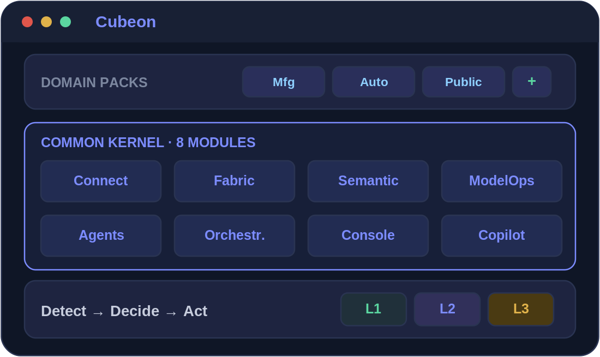
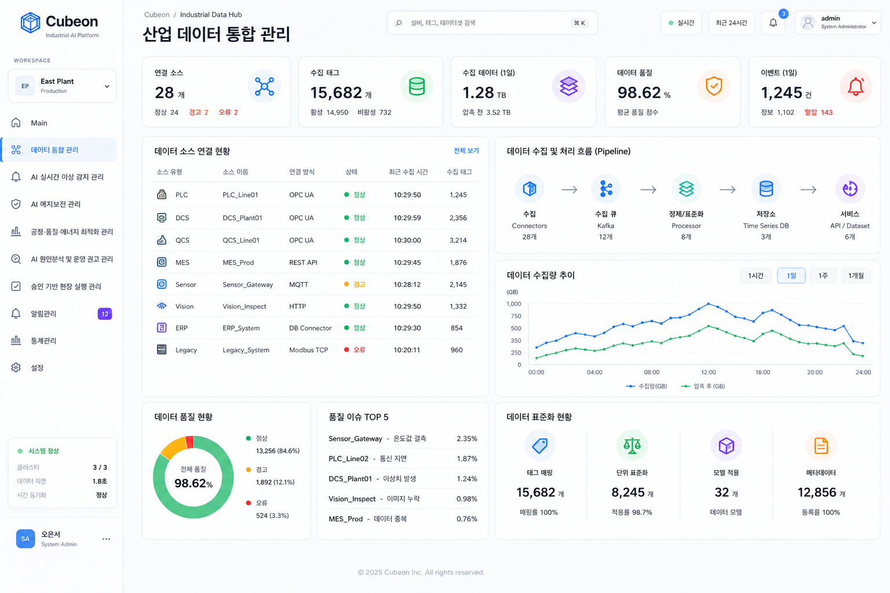
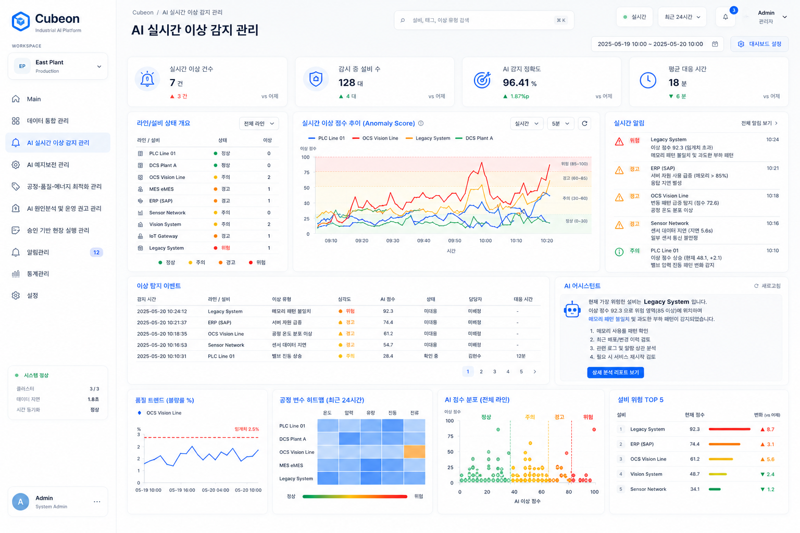
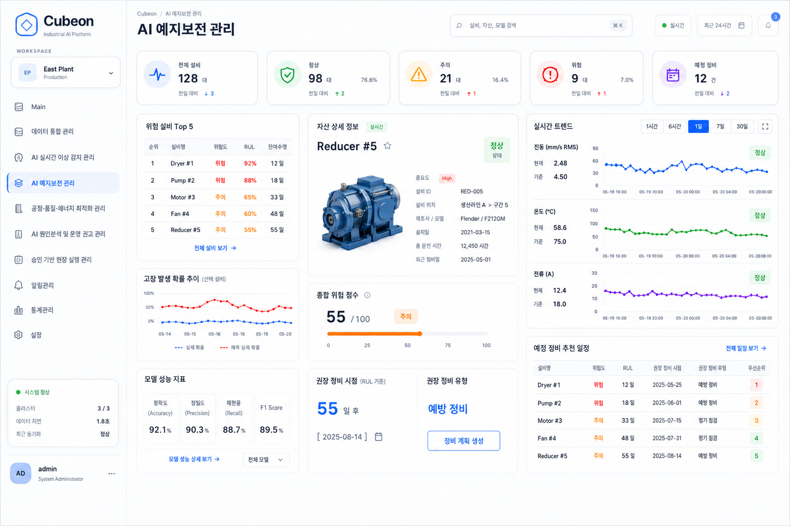
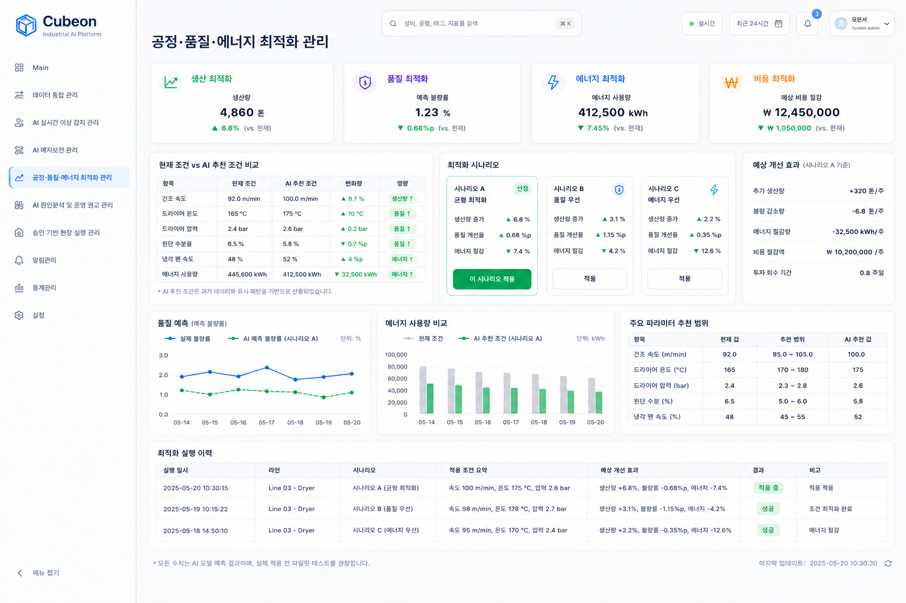
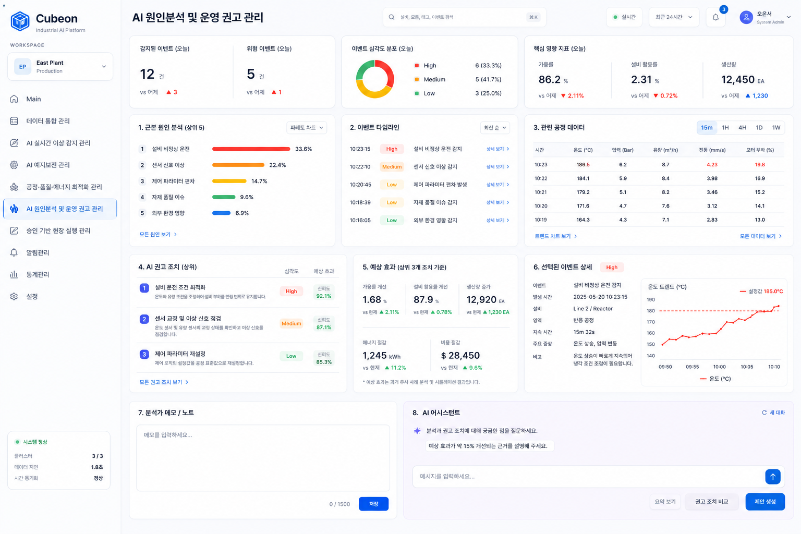
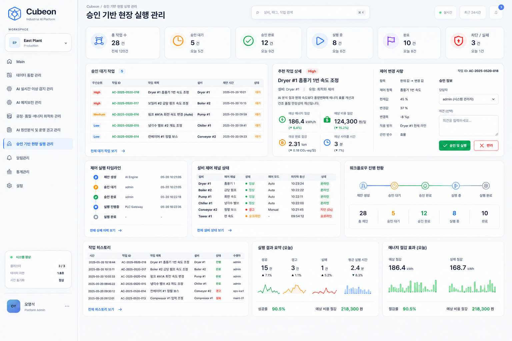

Connect
이기종 데이터 연결
PLC·
- 엣지 수집·
전송 복구 네트워크 단절 시 현장 데이터 임시 저장, 복구 후 재전송 - 보안 연결 TLS 암호화 · 디바이스 인증 · 역할 기반 접근제어(RBAC)로 OT/
IT 경계 보호
분산된 데이터·모델·에이전트를 하나의 운영 체계로 묶습니다.AI 판단을 승인과 실행으로 연결하고 전 과정을 추적합니다.
Cubeon은 AI의 판단을 담당자 확인·
먼저 알림으로 시작하고(L1), 담당자 승인 후 실행하는 단계(L2)를 거쳐, 위험이 낮고 충분히 검증된 업무만 제한적으로 자동 실행(L3)합니다.

데이터 통합부터 이상 감지·예지보전·최적화·원인분석·승인 실행까지 하나의 운영 흐름으로 관리합니다.
PLC·DCS·MES·ERP·센서 등 분산된 산업 데이터를 연결하고, 수집 상태와 데이터 품질·표준화 현황을 한 화면에서 관리합니다.

산업 데이터 통합 관리
라인·설비별 이상 점수와 실시간 알림을 함께 확인하고, 위험도와 대응 상태를 기준으로 우선순위를 판단합니다.

AI 실시간 이상 감지 관리
설비 상태와 잔여수명(RUL)을 예측하고, 위험 설비의 정비 시점과 권장 정비 유형을 운영 계획으로 연결합니다.

AI 예지보전 관리
현재 운전 조건과 AI 추천 조건을 비교하고, 생산·품질·에너지·비용 효과를 시나리오별로 검토합니다.

공정·품질·에너지 최적화 관리
이상 이벤트의 근본 원인을 분석하고, 관련 공정 데이터와 예상 효과를 근거로 실행 가능한 운영 권고안을 제시합니다.

AI 원인분석 및 운영 권고 관리
AI가 생성한 제어 제안을 담당자가 검토·승인한 뒤 현장에 실행하고, 진행 상태와 결과를 전 과정 이력으로 관리합니다.

승인 기반 현장 실행 관리
데이터 연결·
필요한 만큼 확장하고, 모델과 배포 형태는 보안 요건에 맞춰 고릅니다.
PLC·
실시간 스트림·
공통 스키마·
모델의 학습·
현장·
여러 AI 에이전트가 정해진 순서와 역할에 따라 협업하도록 조정합니다.
탐지·
자연어 질의·
제품 기능이 실제 현장 과제와 어떻게 연결되는지 보여주는 대표 경험입니다.
제지 공정 데이터와 AI-OT 운영을 연결해 예지보전·에너지 최적화·자율운영을 단계적으로 실증합니다.
영상·작업자 뱃지·환경 센서의 판단을 담당자 대응 절차와 연결합니다.
AI를 여러 곳에서 시도했지만 운영으로 이어지지 않는 조직에 적합합니다.
팀마다 다른 방식으로 모델을 만들어, 운영·
검증은 끝났지만 승인·
안전·
클라우드·